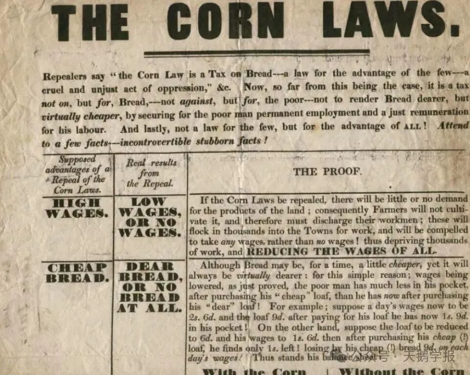
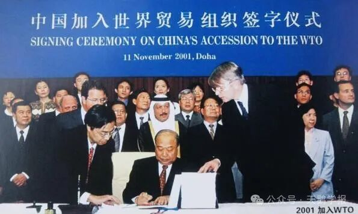

一、点亮贸易之路——“比较优势”理论的诞生
在18世纪中叶以前，英国的田野里，金黄的谷物每年都会装满无数船只，漂洋过海，为世界各地带去丰收的喜悦。那时的英国，不需依赖他国的粮食，其谷物几乎每年都是出口。
随着时光的流转，故事发生了转折。由于谷物价格便宜，而肉类的价格高昂，英国的农夫们纷纷把原本种植谷物的土地变成了遍地牛羊的牧场。 与此同时，工业革命的脚步悄然而至，随着蒸汽机的轰鸣声，工业迎来了前所未有的发展。各类工厂拔地而起，人口迅速增长，粮食供给侧问题逐步显现。
英国政府不得不作出艰难的决定：先是停止了粮食的出口，接着放开国门，从国外引进粮食。但就在这个时候，法国仍深陷旷日持久的欧洲战争（1789年至1814年）并实行了大陆封锁政策，让英国的粮食进口变得异常困难，这就像是在饥饿的英国人面前竖起了一堵高高的城墙。结果就是，英国国内的谷物价格开始飙升，地租也水涨船高，有的地租甚至涨到了以前的两倍，个别情况下涨幅甚至高达五倍！
这让许多曾经的牧场主又看到了种植谷物的商机，他们纷纷把牧场改回了农田，重新种植谷物。这样一来，英国的土地占有者们的收入就大大增加了。
随着1814年和平的到来，英国粮食的进口重新变得畅通无阻，粮价也随之回落。但由于土地租金已经涨到了天上，那些种粮的农户们发现，即使粮食卖得再好，收入也远远无法抵偿种植的成本。
严峻形势给出了艰难的抉择：要么降低地租，要么增加粮食的进口关税。
而在这场博弈中，英国的土地占有者们为了不损害自身的利益，凭借着在内阁、上院和下院的强大影响力，选择了后者。他们挥舞着手中的权力之剑，于1815年颁布了《谷物法》。这部法律就像一道紧箍咒，让英国的粮食价格居高不下，也让工厂主们苦不堪言。他们不得不给工人支付更高的工资，以应对高涨的生活成本。

1815年谷物法颁布，强制实施进口关税
《谷物法》事件引起了英国经济学界的一场大地震。就在这个时候，一位名叫大卫·李嘉图的经济学家站了出来。他在1817年出版的《政治经济学及赋税原理》一书中，提出了著名的“比较优势”。
“比较优势”理论就像一盏明灯，重塑了人们关于贸易的理解。在那之前，主流的观点是：一个国家应该比其他国家更有效地生产它所能生产的商品。如果葡萄牙可以用比英格兰更少的资源生产葡萄酒和布料，那么它应该既生产葡萄酒又生产布料。
而李嘉图的比较优势理论告诉人们：当资源稀缺时，重要的不是绝对成本，而是相对成本。如果葡萄牙比英格兰更擅长酿酒而不是制布，那么它应该专门从事葡萄酒生产，并从英格兰进口布料供应。这将是利用两国稀缺资源的最佳方式，并将在世界经济中带来更高的总福利。
现实中的比较优势：印度主导世界软件外包市场，因为由它承担的机会成本相对低
这部著作也引发了英国社会对于《谷物法》的激烈讨论，为反对《谷物法》的人提供了理论依据，而关于自由贸易和保护主义的较量则持续上演，延绵至今……
二、贸易是好的吗？
从全球一般均衡的维度思考，比较优势思想简明地揭示了贸易的共同潜在收益，认为理想状态的贸易应当是能给各国带来共同好处的。
贸易是一个国家的人与其他国家的人交换某种商品，就如英格兰和葡萄牙通过交换以较低机会成本生产的商品而共同获益，当各国以比较优势为基础进行专业化时，贸易不会以牺牲一个国家的代价使另一个国家受益。形象地来说，比较优势思想启示下的贸易不是零和游戏，而是双赢的艺术。就像两个朋友分享彼此的零食，虽然各自失去了一部分，但却收获了更多的快乐。
但《谷物法》迟迟难以被废除这一鲜活的案例也体现出，李嘉图比较优势思想所指向的贸易并不是零和游戏这一世界观，在现实中不断被蒙上迷雾。站在普遍而不是单一的国家视角来看待福利不仅对贸易经济学家来说是一项重大挑战，对自身利益与贸易环环相扣的各类集团、对受到多方干扰的政策制定者，以及对每一个普通的个体也是更加困难的。
谷物法的最终废除：多方势力之争
所以，在认知难以避免的层层束缚中，为比较优势思想开辟一亩之地，是很有必要的。
三、穷国发展的希望
当我们将视角转回到贸易的主体：国家层面，我们会发现，国与国之间的发展差异是很大的，那么这时贸易还是好的吗？
比较优势思想对此的回应是比较正向的。基于比较优势思想的实践也为广大发展中国家提供了一条通过国际贸易实现经济增长、提升国家福利的希望之路。
发展中国家（尤其是中小发展中国家）与发达国家之间的巨大差距，在过去、现在以及今后相当长的时期内，都几乎不可能出现逆转的趋势。那么对于这些国家而言，它们应该怎样进行对外贸易呢？如果没有李嘉图比较优势思想的提出，这个问题似乎很难得到合理的答案。 这些国家没有生产率的领先，没有竞争的优势条件，贸易谈何容易，哪怕进入国际贸易的领域好像也难逃被吞噬的结局。然而，这个看起来顺理成章的观念在李嘉图比较优势思想的逻辑面前却显得无力。基于比较优势的理论，尽管在绝对优势上远不及富国，但穷国仍然有自己的“长板”，有自己的相对优势。如此一来，在探索自身相对优势的基础上对外贸易不失为一条可能路径。
虽然现实世界远比模型纷繁复杂，政治、经济、民族、文化环环相扣，穷国由于不具备国际地位、没有政治话语权，在由发达国家主导的世界经济格局与迎合发达国家利益的国际规则下可能难免会牺牲一些利益。但是，国际贸易给穷国带来的经济收益与发展推动力是很可观的。
广大发展中国家走过的几十年探索，中国改革开放、加入世贸等带来的巨大变革也都是鲜活的例子。一国经济的增长最主要来源于资本积累、劳动力的增加和技术进步三个要素，对于发展中国家而言，他们往往拥有着丰富廉价的劳动力，但稀缺资本以及先进技术。不仅稀缺资本的填补难以通过穷国自身解决，原创性的技术进步更是一般很难发生在发展中国家。

2001年中国加入世界贸易组织
而通过对外贸易，穷国有可能积累起宝贵资金，可以引进先进的技术和设备，乃至借鉴成功的管理经验和制度创新，这些都是在没有对外贸易的情况很难获得的。而这些，又恰恰正是经济增长的源泉。
所以，怀揣比较优势的启示能够帮助发展中国家避免陷入贸易保护主义，错失获取经济增长的可能。这或许是比较优势思想对国家层面世界观构建的重要价值。
四、经济民族主义与比较优势的对峙
最后，我们将视角转向长远的发展，比较优势思想深刻指出了共同面对经济冲击、迎接更加光明未来的可能。
在充满不确定性的时代背景下，各国可以如何应对经济变化带来的持续动荡呢？
一种方法是今天见证的经济民族主义(Autor et al. 2017；Colantone& Stanig 2017)。即一个国家在追求经济发展时，强调本国利益优先，通过政策手段保护本国产业，提高本国经济的竞争力。 然而，这种方法容易引发国际贸易摩擦和保护主义浪潮，是以高昂的贸易成本为代价的，乃至会对全球贸易格局产生较大的冲击。
不仅如此，在全球化日益加深的今天，我们不难发现，如果过度聚焦于特定国家或某些群体的利益，往往可能引发社会极化现象。这种极化会导致某些群体的声音被过度放大，而其他群体的声音则被削弱，甚至被淹没，这可能在更大范围上引发社会矛盾。
也就是说，经济民族主义并不能使经济应对未来冲击，还会降低经济一体化的正和游戏的收益。
另一种方法是建立跨境机制来补偿损失（Baldwin 2016，Bown2016)，但这似乎也是不现实的。因为世贸组织和其他国际协议已经显示出发展机制的能力有限，几乎无法协调超出特定贸易相关措施范围的其它事情。
还有一种可行的方法正是李嘉图理论的核心，即把重点放在提高一国生产率的政策上。一方面，在李嘉图的世界里各国之间的生产率差异是由国家与行业之间的生产率差异驱动的（科斯蒂诺等人，2012）。另一方面，比较优势并不是一个固定的概念，而是动态变化的。由上述特点，国家可以通过产业政策在高增长产业中发展比较优势（Hausmann et al.2007），通过提高全部或部分高增长行业的生产率，各国可以减少国内经济变化带来的损失。
进一步提出是否有以下可能，李嘉图的比较优势思想隐藏着的是一种较之贸易保护主义更具有远见性的策略，基于取长补短、合作进步的观念：从各国的角度出发，分别提升自身生产率；从世界的角度出发，相互实行自由贸易。则各国在获得贸易收益的同时也获得技术进步的收益，减少经济波动带来的损失，实现世界整体的共同进步。
即暂时抛开政治、社会等可行性的因素，抛开贸易保护主义能够在一时显著提升单个国家福利的诱惑，从长远来看，比较优势思想具备着很大的正向价值。
五、过往的指引，当今的警言
当过去不再照亮未来，人心将在黑暗中徘徊。
第一次世界大战中止了19世纪下半叶开始的经济一体化进程，随后的几十年带来了大萧条和民族主义在许多国家的兴起。世界经历一次又一次的动荡，血泪教训促使人们致力于打造寻求更加自由的国际贸易体系。于是世界领导人创建了国际机构，通过谈判达成了双边和多边协议，历经几十载初见成效，降低了人为的贸易壁垒。根据世界银行网站的数据，世界贸易占世界GDP的比例从1960年的不到25%增长到2007年的60%，国际贸易的自由化得见曙光。
但2008-2009年的经济衰退导致了贸易的崩溃，世界再难以完全恢复。而后又有贸易战爆发、反全球化盛行，各类事件正在割裂世界的贸易，乃至导向以邻为壑的局面，国际贸易领域的自由度也出现着令人担忧的倒退趋势。
诚然，李嘉图比较优势理论由于其严苛的假定、高度静态的模型在瞬息万变的世界格局与不断发展的国际贸易中遇到了诸多挑战。但正如很多贸易经济学家共同认可的“尽管比较优势理论有其局限性，它仍是经济学中最深刻的真理之一。那些忽视比较优势的国家在生活水平和经济增长方面会因此而付出沉重的代价。”
与1817年相比，比较优势思想在当下的世界情境中易被遗忘却更加不容被忽视。自愿的、未经扭曲的贸易对双方都有利，这是我们不应该忘记的、过往历史凝结的教训，也应成为当代的警言。